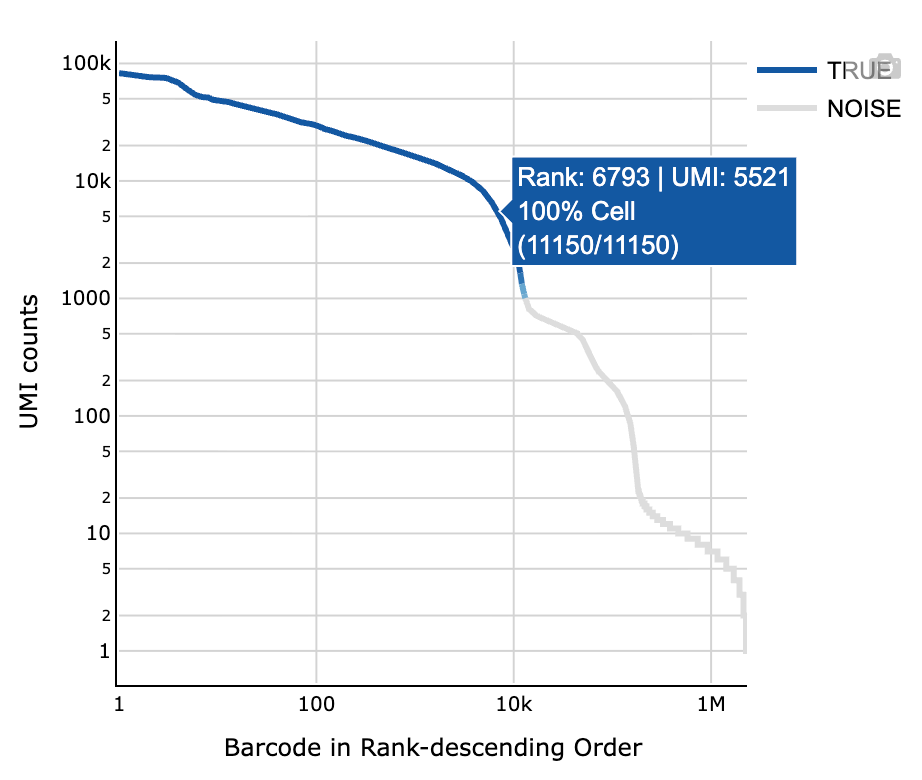
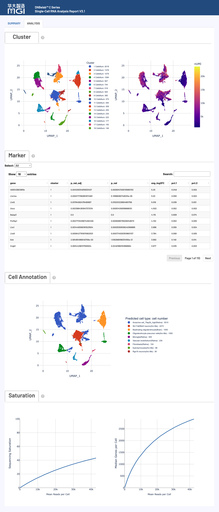

概述 ¶
单细胞RNA分析完成后，会在指定的输出目录中生成标准化的文件和子目录结构，专门用于基因表达谱分析和细胞类型鉴定。本文档详细说明了每个输出文件的内容、格式和用途，帮助用户充分理解和高效利用单细胞RNA分析结果。
提示
所有输出文件均采用标准格式，兼容主流单细胞分析工具（如Scanpy、Seurat等），遵循国际通用的数据格式规范。
输出目录结构 ¶
.
├── analysis/ # 下游分析结果目录
│ ├── cluster.csv # 细胞聚类结果文件
│ ├── cell_classification.csv # 双物种细胞归属结果文件（仅双物种分析）
│ ├── marker.csv # 差异表达基因标记文件
│ └── QC_Cluster.h5ad # 质控和聚类后的AnnData对象
├── anno_decon_sorted.bam # 比对注释并排序的 BAM 文件
├── anno_decon_sorted.bam.bai # BAM 索引文件
├── filter_feature.h5ad # 过滤后的特征矩阵（AnnData格式）
├── filter_matrix/ # 过滤后的基因表达矩阵目录
│ ├── barcodes.tsv.gz # 细胞条形码文件
│ ├── features.tsv.gz # 基因/特征信息文件
│ └── matrix.mtx.gz # 稀疏矩阵文件（Matrix Market 格式）
├── metrics_summary.xls # 分析指标汇总表
├── raw_matrix/ # 原始基因表达矩阵目录
│ ├── barcodes.tsv.gz # 原始细胞条形码文件
│ ├── features.tsv.gz # 原始基因/特征信息文件
│ └── matrix.mtx.gz # 原始稀疏矩阵文件
├── singlecell.csv # 单细胞元数据表
└── *_scRNA_report.html # HTML格式的分析报告
详细文件说明 ¶
比对与注释文件 ¶
核心内容: 原始测序数据比对到参考基因组的结果文件，包含完整的比对信息和细胞条形码标记
anno_decon_sorted.bam¶
这是包含所有原始数据的 scRNA-seq 比对结果文件。
-
核心用途:
- 深度分析与可视化: 可用于 IGV 等基因组浏览器进行深度可视化，检查特定基因座的比对情况和剪接模式。
- 自定义分析: 为需要直接操作比对级别数据的用户提供原始输入，例如进行可变剪接分析、RNA速率分析等。
-
内容与格式:
- 采用国际标准的 BAM (Binary Alignment Map) 格式。
- 文件已按基因组坐标排序，并建立了索引（
.bai文件），便于快速随机访问。 - 每个读段都通过 TAG 字段标记了细胞来源、UMI 和基因注释信息。
-
关键TAG字段说明:
- BAM 文件通过丰富的 TAG 字段来存储单细胞特有的信息，主要分为细胞/分子标识和基因注释两大类。
细胞和分子标识标签：
基因注释和功能标签：
anno_decon_sorted.bam.bai¶
anno_decon_sorted.bam 文件的索引。
- 核心用途:
- 快速数据访问: 允许 IGV、Samtools 等工具在无需完整加载 BAM 文件的情况下，快速跳转并读取任意基因组区域的比对数据。
- 性能保障: 是所有对 BAM 文件进行随机访问操作的性能保障。
- 格式与说明:
-
索引文件由
samtools index命令生成。为了兼容不同大小的基因组，流程会自动选择合适的索引格式（BAI 或 CSI）。
-
特征矩阵文件 ¶
核心内容: 单细胞基因表达计数矩阵，分为原始数据和质控过滤后数据，采用标准稀疏矩阵或AnnData格式
过滤后的基因表达矩阵 (filter_matrix/)¶
包含经过高质量细胞过滤后的基因表达计数矩阵，是进行下游定量分析的核心数据。
-
核心用途:
- 下游定量分析: 作为细胞聚类、差异表达分析等分析的主要输入。
- 高质量数据: 只包含被鉴定为真实细胞的条形码，确保分析结果的准确性。
-
内容与格式:
- 采用标准的 Matrix Market Exchange (MEX) 格式（关于矩阵格式详见Matrix Market 格式说明），由以下三个压缩文件组成：
-
格式优势:
- 空间高效: 稀疏矩阵格式（
.mtx）仅存储非零元素，极大节省了存储空间。 - 高度兼容: MEX 格式是单细胞社区的标准，兼容 Seurat, Scanpy 等几乎所有主流分析工具。
- 空间高效: 稀疏矩阵格式（
原始基因表达矩阵 (raw_matrix/)¶
包含所有检测到的细胞条形码（未经过滤）的原始基因表达计数矩阵。
-
核心用途:
- 质量控制评估: 可用于评估细胞过滤的效果，或根据自定义标准进行手动过滤。
- 数据完整性: 保留了所有原始数据，可用于深度挖掘或在需要时重新分析。
-
内容与格式:
- 采用标准的 Matrix Market Exchange (MEX) 格式，其文件组成与
filter_matrix/目录完全相同。 - 包含所有被检测到的条形码，包括高质量细胞、低质量细胞和背景液滴。
- 采用标准的 Matrix Market Exchange (MEX) 格式，其文件组成与
filter_feature.h5ad¶
经过细胞鉴定和过滤后的特征矩阵，采用 AnnData (.h5ad) 格式存储，是 filter_matrix/ 目录内容的替代和补充。
- 核心用途:
- Python 生态系统集成: 作为
scanpy等 Python 单细胞分析库的标准输入格式，无缝衔接下游分析。 - 数据整合: 单个文件即可封装表达矩阵、细胞元数据和基因元数据，便于管理和分享。
- Python 生态系统集成: 作为
- 内容与格式:
- 基于 HDF5 的二进制格式，详细格式参考AnnData格式说明。
分析结果目录 (analysis/) ¶
核心内容: 下游生物信息学分析结果，包括细胞聚类、差异基因和质控后数据
cluster.csv¶
细胞聚类分析结果文件，采用 CSV 格式。包含每个细胞的 ID、所属聚类、降维坐标以及关键质控指标。
- 核心用途:
- 聚类结果可视化: 可直接用于绘图软件，可视化 UMAP 降维结果。
- 细胞注释基础: 为手动或自动细胞类型注释提供基础分组信息。
- 内容与格式:
- 每一行代表一个高质量细胞，主要列包括：
Barcode: 细胞 IDCluster: 该细胞所属的聚类编号UMAP_1,UMAP_2: UMAP 降维的二维坐标nGene,nUMI: 每个细胞检测到的基因数和 UMI 数
- 每一行代表一个高质量细胞，主要列包括：
cell_classification.csv（仅双物种分析）¶
双物种（如 hg38 + mm10）分析时生成的细胞物种归属结果文件，采用 CSV 格式。
- 核心用途:
- 细胞物种鉴定: 判定每个细胞主要来源于哪一个物种。
- 混合细胞识别: 标记潜在双细胞/混合细胞（
Multiplet），用于后续过滤或单独分析。
- 内容与格式:
- 每一行代表一个细胞条形码，主要列包括：
barcode: 细胞条形码 IDhg38: 归属于人参考（hg38）的计数mm10: 归属于鼠参考（mm10）的计数call: 物种归属结果（hg38/mm10/Multiplet）
- 每一行代表一个细胞条形码，主要列包括：
示例：
barcode,hg38,mm10,call
CELL1_N2,17098,821,hg38
CELL2_N8,56978,1939,hg38
CELL5_N2,868,4216,mm10
CELL8_N2,2371,71601,mm10
CELL10_N2,1299,36697,mm10
CELL11_N1,1633,44048,mm10
CELL14_N3,110102,2919,hg38
CELL19_N1,763,19995,mm10
CELL21_N3,44712,1603,hg38
CELL27_N3,64247,90800,Multiplet
CELL31_N3,87308,2773,hg38
CELL32_N2,1871,51359,mm10
CELL36_N2,871,19635,mm10
CELL38_N3,42964,1487,hg38
CELL41_N3,360,6379,mm10
CELL42_N3,2853,74058,mm10
CELL43_N7,54863,1875,hg38
CELL44_N2,14431,638,hg38
CELL46_N3,4071,129035,mm10
CELL47_N4,1865,51515,mm10
CELL49_N2,49776,1521,hg38
CELL51_N5,1362,40817,mm10marker.csv¶
各聚类的差异表达基因（标记基因）列表，采用 CSV 格式。记录了每个基因在特定聚类中的表达显著性、表达量变化等信息。
- 核心用途:
- 细胞类型鉴定: 通过查找已知细胞类型的标记基因，对无监督聚类结果进行生物学注释。
- 功能富集分析: 可作为后续 GO、KEGG 等功能富集分析的输入基因列表。
- 内容与格式:
- 每一行代表一个基因在一个聚类中的差异表达信息，主要列包括：
cluster: 基因作为标记基因的聚类编号gene: 基因名称avg_log2FC: 平均对数倍数变化p_val_adj: 调整后的p值，评估统计显著性pct.1,pct.2: 该基因在目标聚类和其他聚类中的表达细胞比例
- 每一行代表一个基因在一个聚类中的差异表达信息，主要列包括：
QC_Cluster.h5ad¶
经过完整质控、降维和聚类分析的单细胞数据对象，采用 AnnData (.h5ad) 格式。它整合了上游的表达矩阵和下游的分析结果。
- 核心用途:
- 分析复现与探索: 包含完整的分析流程和结果，可直接在
scanpy中加载，进行深入探索性分析或可视化。 - 数据交付: 作为最终分析结果的交付文件，结构清晰，信息完整。
- 分析复现与探索: 包含完整的分析流程和结果，可直接在
- 内容与格式:
- 在
filter_feature.h5ad的基础上，增加了以下信息：obs: 包含聚类结果 (cluster) 等细胞元数据。obsm: 包含降维坐标 (X_umap)。uns: 包含标记基因 (marker_genes) 等非结构化结果。
- 在
分析指标汇总 ¶
核心内容: 实验质量评估和统计指标汇总，提供完整的数据质量控制信息
metrics_summary.xls¶
采用 Excel 格式的关键分析指标汇总表，提供了对实验整体质量的全面评估。
-
核心用途:
- 质量评估: 快速评估测序数据质量、比对效率、细胞鉴定结果等核心指标。
- 结果概览: 无需查看所有文件即可对分析结果有一个全面的了解。
-
内容与格式:
- 包含三大类别的关键指标：
- 内置推荐的质量控制标准，方便用户判断：
推荐质量阈值
- 有效条形码比例: >70%
- Q30 碱基质量: >75%（条形码和 UMI 区域）
- 转录组置信比对率: >30%
- 细胞内 reads 比例: >50% (核样本 >30%)
- 每细胞平均 reads 数: >15,000
singlecell.csv¶
采用 CSV 格式的单细胞级别质量控制信息表，记录了每个细胞条形码的详细统计数据。
-
核心用途:
- 精细化质控: 支持用户根据自定义标准进行更精细的细胞过滤和分析。
- 下游分析输入: 可作为下游分析工具的细胞元数据（metadata）输入，支持 VDJ 分析中的细胞过滤和磁珠合并操作。
-
内容与格式:
- 每一行代表一个细胞条形码。
- 主要列包括：UMI 数量、基因数量、线粒体基因比例以及是否被判定为高质量细胞、磁珠合并信息等。
*_scRNA_report.html¶
采用 HTML 网页格式的交互式综合分析报告。
-
核心用途:
- 结果可视化: 以交互式图表的形式，直观展示质控结果、细胞聚类、标记基因等关键分析结果。
- 结果解读: 提供各项指标的生物学意义和技术解释，帮助用户深度解读数据。
- 便捷分享: 单个 HTML 文件，易于传阅和分享。
-
内容与格式:
- 无需网络，可在任何现代浏览器中打开。
- 报告的详细解读请参考本文档下方的 网页报告释义 部分。
文件格式说明 ¶
技术规范: 输出文件采用的标准格式详细说明
Matrix Market 格式 (.mtx.gz) ¶
Market Exchange Format (MEX) 是单细胞分析中用于存储稀疏计数矩阵的标准格式，具有空间高效和高度兼容的优点。
-
核心优势:
- 空间高效: 稀疏矩阵仅存储非零元素，对于通常超过95%为零值的单细胞数据，可极大节省存储空间。
- 高度兼容: 作为国际标准格式，可被 Seurat, Scanpy 等几乎所有主流分析工具直接读取。
-
文件组成:
- 一个完整的MEX格式数据由以下 三个文件 构成：
AnnData格式 (.h5ad) ¶
格式概述: AnnData ("Annotated Data") 是专为矩阵型数据设计的数据结构，特别适用于单细胞 RNA 测序数据分析。基于 HDF5 格式，提供高效的数据存储和访问能力。
数据结构¶

网页报告释义 ¶
概述: HTML 网页报告提供了单细胞 RNA 测序分析结果的全面可视化展示和详细解读，包含关键性能指标评估，帮助用户快速了解实验质量和分析结果
HTML 网页报告是单细胞 RNA 测序分析的综合展示平台，整合了从数据质量控制到下游生物学分析的完整结果。该报告采用交互式可视化设计，帮助用户快速评估实验质量、理解分析结果并指导后续研究方向。
使用建议
建议按照报告展示顺序依次查看各项指标。
注意
以下标准仅供参考，实际质量评估应考虑组织类型、细胞状态和实验目标等多种因素。不同样本间存在显著差异，建议结合具体实验背景进行判断。
报告主要内容与结构¶

核心分析指标详解¶
细胞指标 (Cell Metrics) ¶
核心功能: 细胞识别、质量评估和基因表达统计，提供实验整体效果的关键指标
质量控制标准
注意
以下标准仅供参考，实际质量评估应考虑组织类型、细胞状态和实验目标等多种因素。不同样本间存在显著差异，建议结合具体实验背景进行判断。
详细指标解释：
测序指标 (Sequencing Metrics) ¶
核心功能: 测序数据的基础质量评估，包括条形码识别率、UMI质量和测序准确性
质量控制标准
注意
以下标准仅供参考，实际质量评估应考虑组织类型、细胞状态和实验目标等多种因素。不同样本间存在显著差异，建议结合具体实验背景进行判断。
详细指标解释：
注
以上所有比例的计算均以原始测序读段(Number of Reads)为准，确保了各项指标之间的可比性和一致性。
比对指标 (Mapping Metrics) ¶
核心功能: 评估 Reads 与参考基因组的比对质量，包括比对率、特异性和基因组区域分布
质量控制标准
注意
以下标准仅供参考，实际质量评估应考虑组织类型、细胞状态和实验目标等多种因素。不同样本间存在显著差异，建议结合具体实验背景进行判断。
详细指标解释：
注
以上所有比例的计算均以原始测序读段(Number of Reads)为准，确保了各项指标之间的可比性和一致性。
交互式可视化图表解读 ¶
核心功能: 提供全面的数据可视化分析，从细胞质量控制到下游生物学分析的完整展示
可视化图表组一：细胞质量控制分析 ¶
细胞鉴定曲线图 (Barcode Rank Plot)¶
图表功能: 该图通过将所有细胞按其包含的 UMI 数进行排序，来区分高质量的真实细胞与背景噪音。

如何解读
- 视觉编码: 蓝线（有效细胞）| 灰线（背景噪音）| 蓝色渐变区（混合区域）
- 图表轴系详解:
- X轴: Barcode Rank（细胞排序）- 按 UMI 总数降序排列（对数刻度）
- Y轴: UMI Counts（UMI 计数）- 每个细胞的总 UMI 数量（对数刻度）
- 交互: 悬停显示细胞排序位置、UMI 数量和该区段真实细胞比例
- 质量评估指导:
- 理想模式: 明显"拐点"区分真实细胞和背景，真实细胞区域陡峭下降，背景区域平缓分布
- 异常模式: 缺乏明显拐点（细胞浓度过低）、平缓下降（背景RNA过高）
液滴磁珠分布图 (Droplet Beads Distribution)¶
图表功能: 展示在真实细胞液滴中，捕获到的细胞条形码（Beads）的数量分布情况。
如何解读
- 理论分布: 液滴中磁珠的数量分布理论上符合泊松分布，这反映了微反应体系中随机捕获过程的统计特性。
- 实际影响: 最终的分布会受到测序饱和度、液滴大小均一性、细胞浓度等实验因素的影响。
细胞数据分布图 (Cell Data Distribution)¶
图表功能: 通过三个独立的小提琴图，分别展示高质量细胞在 基因数 (nGenes)、UMI 数 (nUMI) 和 线粒体基因比例 (percent.mt) 这三个关键质量指标上的分布情况。
如何解读
- 基因数和 UMI 数: 分布的中心（最宽处）越高，表明细胞的转录组复杂度和捕获效率越高。
- 线粒体基因比例: 分布应集中在较低的百分比（通常 < 10%–20%）。比例过高可能表示细胞凋亡或压力状态。

可视化图表组二：下游生物学分析 ¶
核心功能: 细胞聚类分析、差异基因识别、细胞类型注释和测序深度评估的综合展示
细胞聚类分析图 (Cluster Analysis)¶
图表功能: 通过 UMAP 降维和 Louvain 聚类算法，将具有相似基因表达模式的细胞在二维空间中聚集在一起，从而识别潜在的细胞亚群。
如何解读
- 左图 (细胞类型聚类): 每个点代表一个细胞，不同颜色代表不同的细胞聚类。空间位置相近的细胞，其基因表达谱也更相似。
- 右图 (UMI 数分布): 在相同的 UMAP 空间上，用颜色梯度展示每个细胞的总 UMI 数。可用于辅助判断聚类结果的可靠性，例如某些 cluster 是否由低质量细胞组成。
标记基因分析 (Marker Genes)¶
图表功能: 展示每个细胞聚类的特征性差异表达基因，用于识别和注释不同的细胞类型。
如何解读
- 关键指标解释:
- P-val: 差异表达的统计显著性p值，数值越小表示差异越显著（阈值: < 0.05显著，< 0.01高度显著）
- p_val_adj: 经Bonferroni多重检验校正后的调整p值，控制假阳性率（推荐使用调整p值进行最终筛选）
- avg_log2FC: 平均对数倍数变化（log2尺度）
- pct.1 / pct.2: 目标聚类/其他聚类中表达该基因的细胞比例
- 交互功能: 聚类筛选（下拉菜单选择特定聚类）| 基因搜索（搜索框快速定位基因表达）
细胞类型自动注释 (Cell Type Annotation)¶
图表功能: 在UMAP图上，使用从参考数据库（如scHCL, scMCA）推断的细胞类型对每个聚类进行标注。
如何解读
- 注释结果: 为每个聚类提供一个可能的细胞类型标签。
- 物种支持: Human (Homo sapiens) / Mouse (Mus musculus)；其他物种暂不提供细胞类型注释。
- 使用建议: 自动注释结果仅供参考，其准确性依赖于参考数据库的质量和样本的相似性。建议结合标记基因进行手动验证和校正。
测序饱和度曲线 (Sequencing Saturation Curve)¶
图表功能: 评估测序深度的充分性和数据复杂度，即继续增加测序量能否发现更多新的基因或 UMI。
如何解读
- 坐标轴: X轴为平均每个细胞的测序读段数，Y轴为饱和度/平均每个细胞的中位基因数。
- 曲线趋势: 曲线如果趋于平缓，表明测序已接近饱和，增加测序深度对发现新基因的贡献不大。如果曲线仍在快速上升，则表明增加测序可能仍有较大收益。
双物种细胞归属页面（仅双物种分析）¶
当输入为双物种参考（例如 hg38 + mm10）时，网页报告会新增“细胞物种归属”页面，用于展示双物种拆分与混合细胞识别结果。

图表功能: 该页面同时给出液滴层面的多细胞率、细胞层面的物种归属散点图，以及按物种拆分后的质量统计，便于快速判断双物种分离效果。
如何解读
- Droplet 概览区（左上）:
Droplets with >0 Cell: 至少含 1 个细胞的液滴数。Droplets with >1Cell (Observed / Inferred): 观测/推断的多细胞液滴数量。Fraction Droplets with >1 Cell: 多细胞液滴（推断）占比。该值越高，通常表示双细胞风险越高。
- Cell UMI Counts 散点图（右上）:
- X 轴为
hg38 UMI counts，Y 轴为mm10 UMI counts。 - 主要沿 X 轴分布的点通常判定为
hg38细胞；主要沿 Y 轴分布的点通常判定为mm10细胞。 - 同时在两个轴上都较高的点常见于
Multiplet（混合/双细胞）。
- X 轴为
- Summary 统计区（下方）:
- 分别给出
hg38与mm10的细胞数量、每细胞中位 UMI / 基因数、总检出基因数，以及比对相关指标。 - 若两个物种在细胞数量与核心质量指标上差异过大，通常提示上样比例、样本状态或分离效果存在偏差。
- 分别给出
- 使用建议:
- 建议将
call=Multiplet细胞在下游聚类前单独标记或剔除。 - 建议结合
analysis/cell_classification.csv与该页面散点图共同判读，而非仅依赖单一阈值。
- 建议将
相关文档¶
反馈与支持
本文档持续更新中，如发现内容错误或需要补充的信息，欢迎反馈。
文档版本： 3.1 | 最后更新： 2026年4月